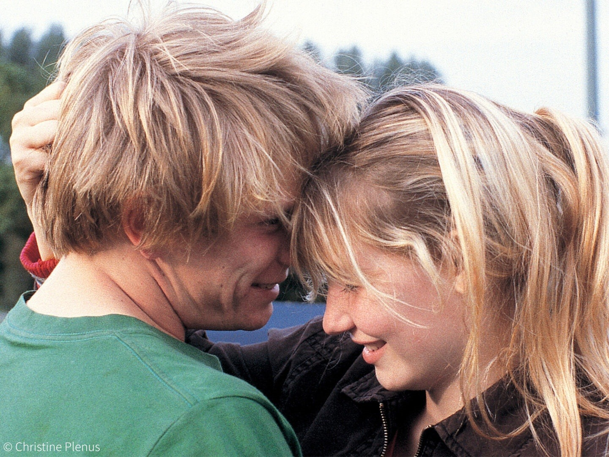
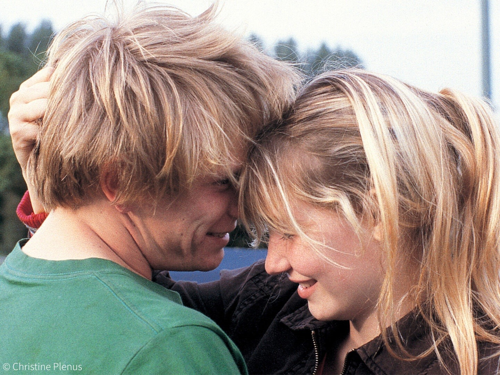
 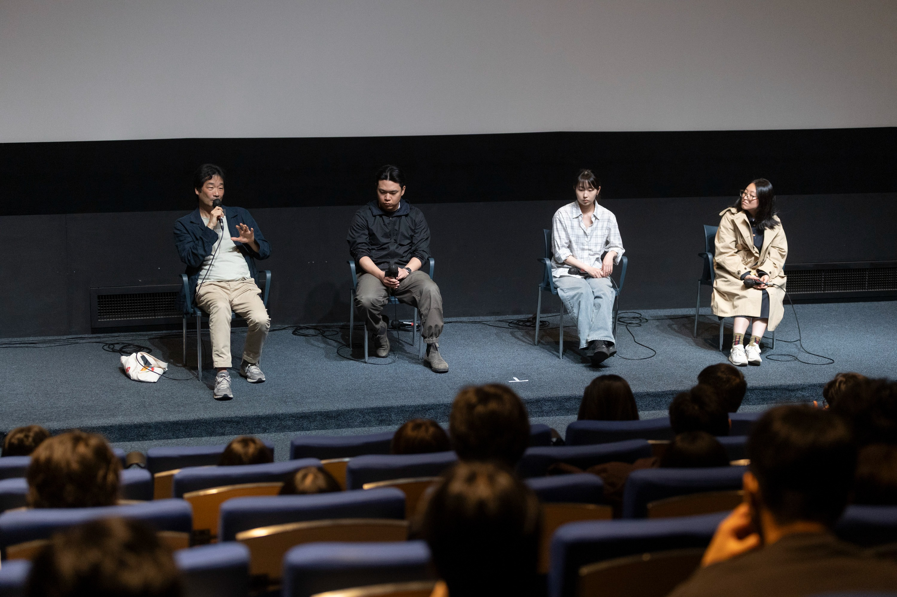
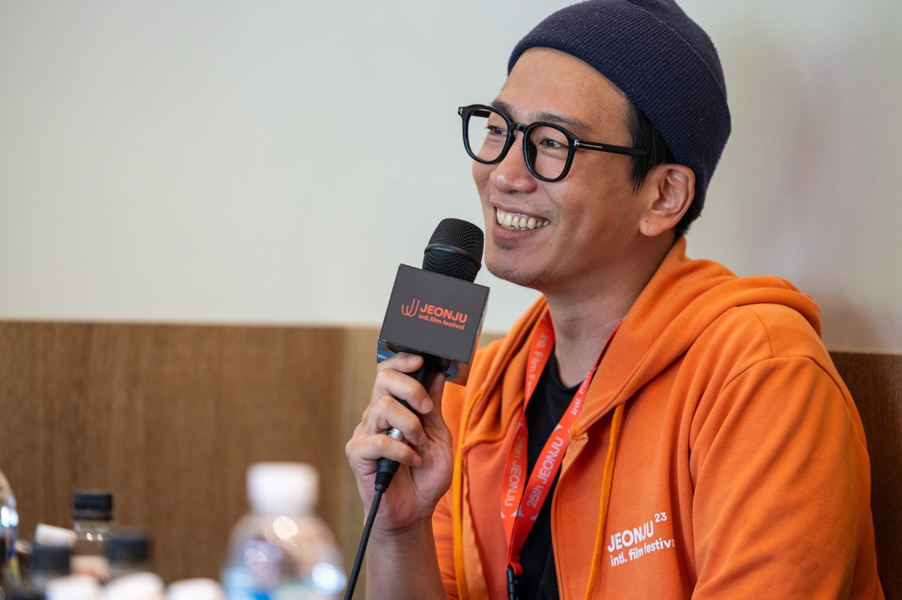
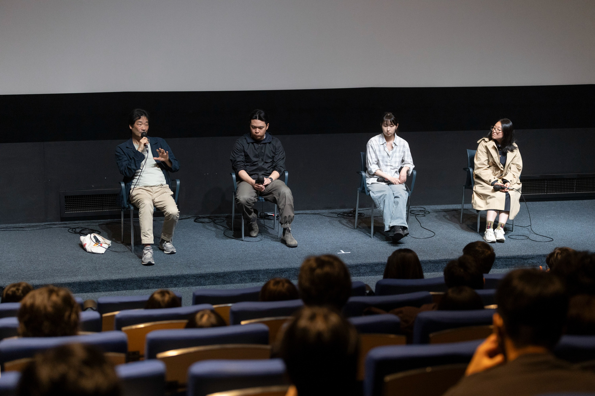
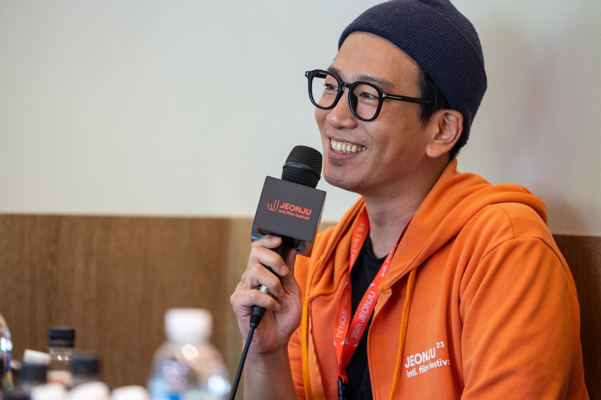

전주국제영화제는 각 분야에서 탁월한 영화적 성취를 이루고 자신만의 영역을 개척한 전문가를 선정해 마스터클래스를 개최합니다.
- 마스터클래스는 영화 상영 후 90분 동안 진행됩니다.
- 참가 비용: 15,000원 (영화 관람 포함)
- 동시 통역(영어)이 진행됩니다.
- 영화제 사정에 따라 아래 내용은 변경될 수 있습니다.
-
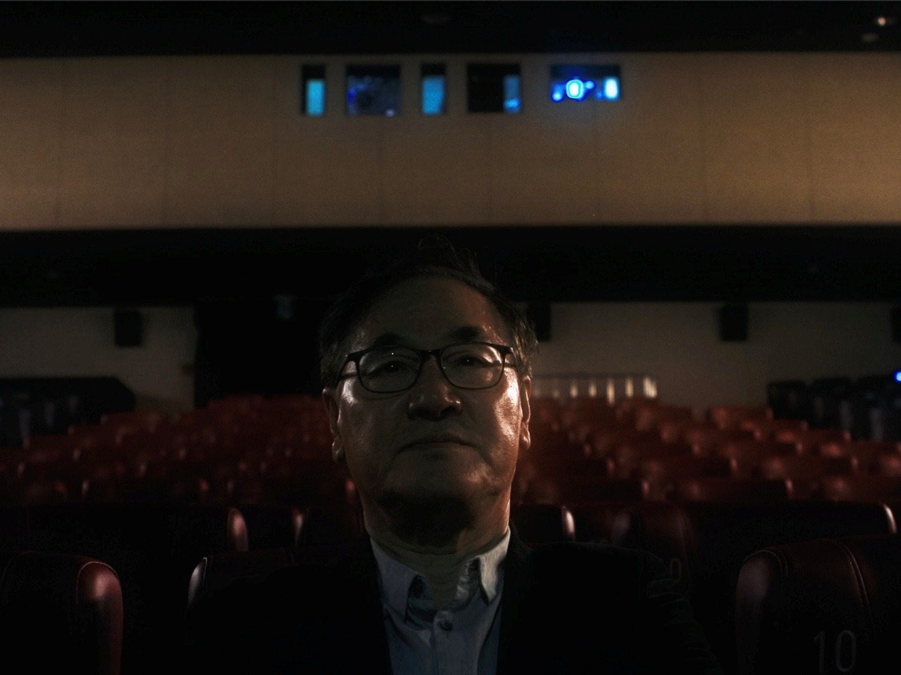
배창호 특별전 : 대중성과 실험성 사이에서
배창호 특별전
The Close Up of Bae Chang-ho
1980년대와 1990년대 한국영화의 황금기를 이끈 거장 배창호 감독이 자신의 영화 여정을 함께 나누는 시간입니다. [고래사냥](1984)과 [깊고 푸른 밤](1985)으로 대중적 사랑을 받으면서도, [황진이]와 [꿈] 같은 작품을 통해 과감한 영화적 실험을 시도했던 감독의 이중적 정체성을 조명하고 한국영화사의 중요한 변곡점에서 대중성과 예술성 사이를 오가며 자신만의 영화 철학을 구축해온 과정을 생생하게 공유합니다.
5.3(토) 13:30 메가박스 전주객사 1관
code 311
게스트 : 배창호(감독)
모더레이터 : 김영진(영화평론가)
-
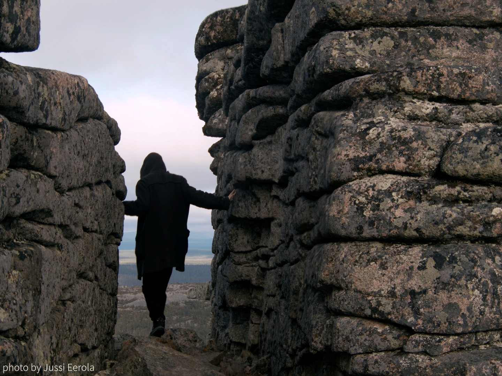
마스터즈
너와의 거리
D is for Distance
1970년대 전설적인 화제작 [라디오 온](1979)을 비롯해, [런던 순환도로](2002) 등으로 알려진 크리스토퍼 페팃 감독이 신작 [너와의 거리]로 심리 지리학적 영화 만들기에 대한 이야기를 공유합니다.
5.4(일) 10:00 메가박스 전주객사 1관
code 411
게스트 : 크리스토퍼 페팃(감독)
모더레이터 : 정지혜(영화평론가)
-
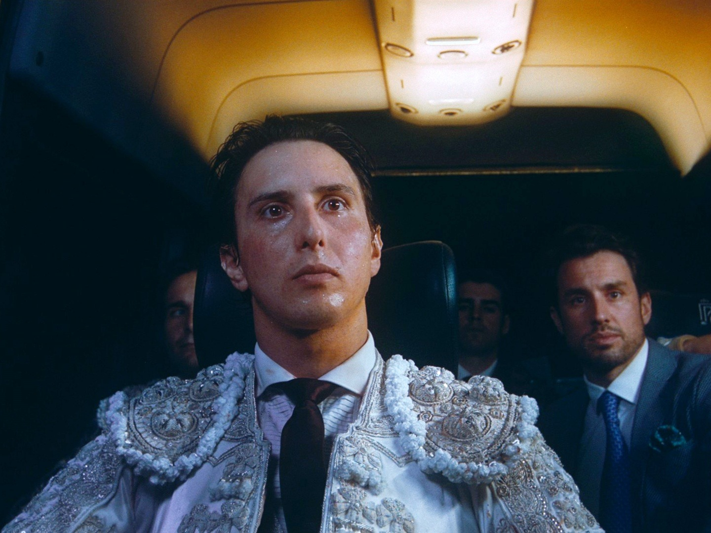
특별전 : 가능한 영화를 향하여
고독의 오후
Afternoons of Solitude
몬세 트리올라는 안데르그라운필름의 공동설립자입니다. 알베르 세라의 모든 영화를 제작했고, 알랭 기로디의 [미세리코르디아], 다네 콤렌의 [애프터워터]의 프로듀서이며 독립적인 작가주의 영화 제작을 추구한 그가 실천해온 대안적인 영화 제작 방법을 공유합니다.
5.5(월) 17:00 메가박스 전주객사 1관
code 546
게스트 : 몬세 트리올라(프로듀서)
모더레이터 : 문성경(전주국제영화제 프로그래머)
-
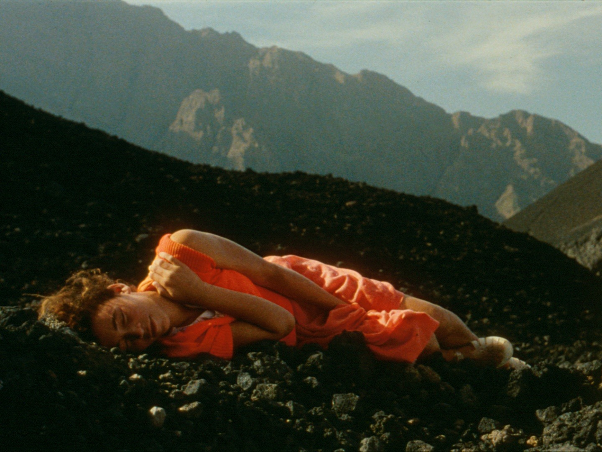
특별상영
용암의 집
CASA DE LAVA
페드루 코스타는 자신만의 독특한 양식을 구축한 감독으로 90년대 후반 디지털과 같은 영화의 새로운 도구를 통해 사회 소외계층의 삶을 사실적이고 현대적으로 묘사하는 영화를 연출했습니다. 코스타의 방문을 기념하며 그의 영화, 현재의 영화에 대해 이야기를 나눕니다.
5.8(목) 14:00 CGV전주고사 1관
code 845
게스트 : 페드루 코스타(감독)
모더레이터 : 문성경(전주국제영화제 프로그래머)
영상이 초단위로 생겨나는 사회에서 전주국제영화제는 제대로 된 영화 보기를 시도합니다.
영화를 ‘보기'에 그치지 않고 영화를 ‘알기’ 위해
혹은
영화의
역사에 대한 이해를 돕고자 영화학자, 비평가 등이 영화를 통해 다양한 해석을 제시하는 강연 프로그램입니다.
- 영화로의 여행은 영화 상영 후 60분 동안 진행됩니다.
- 참가 비용: 12,000원(영화 관람 포함)
- 별도 제공 여부가 표기된 행사에 한해서만 영어 통역이 제공됩니다.
- 영화제 사정에 따라 아래 내용은 변경될 수 있습니다.
-
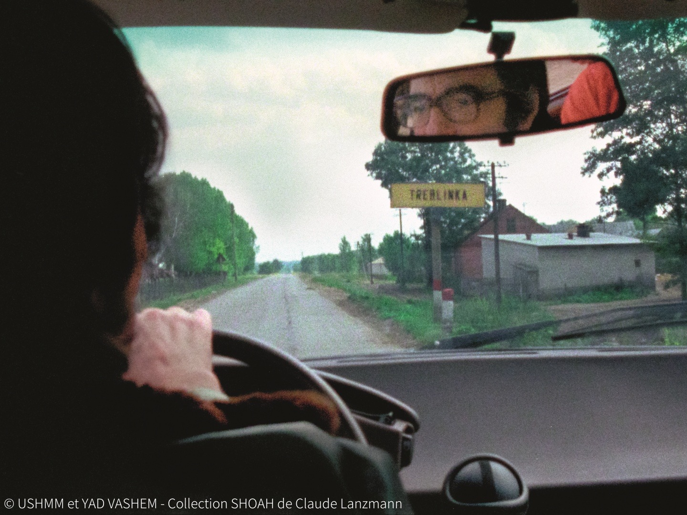
시네필전주
내가 가진 것은 아무것도 없었다
All I Had Was Nothingness
2025년은 아우슈비츠 해방 80주년이자 [쇼아]가 최초 공개된 지 40년이 된 해입니다. [쇼아]의 미공개 영상를 담은 다큐멘터리 [내가 가진 것은 아무것도 없었다] 상영 후 정성일 영화평론가가 [쇼아]에 대한 이야기를 들려줍니다.
5.3(토) 10:30 CGV전주고사 3관
code 305
모더레이터 : 정성일(영화평론가)
-
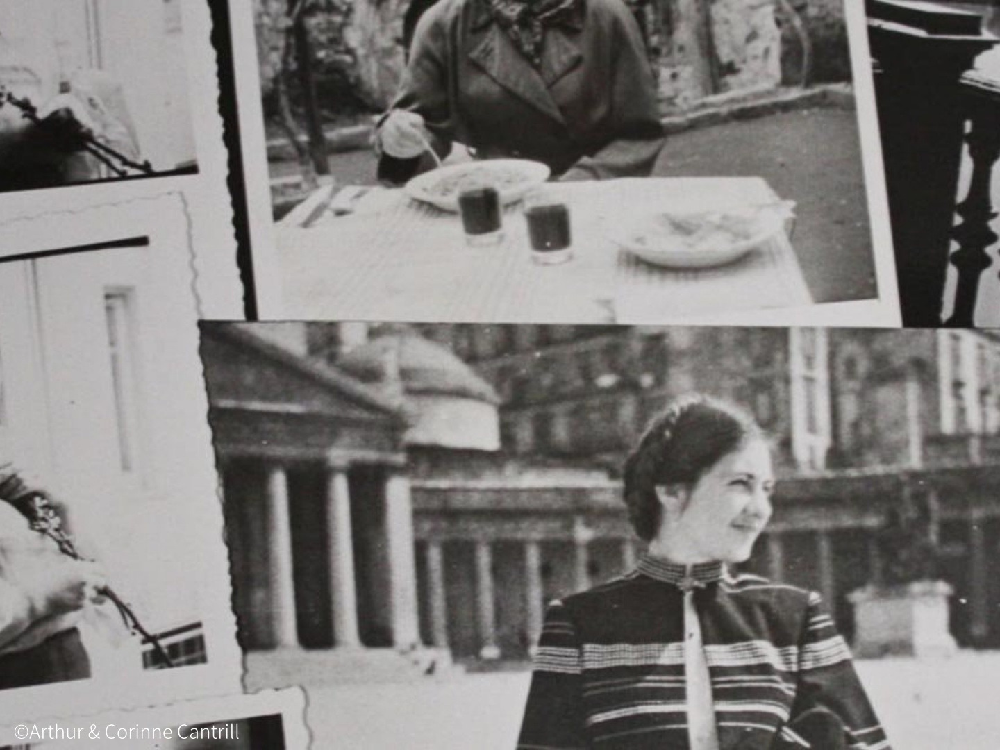
게스트 시네필: 에이드리언 마틴
이 생의 몸
In This Life's Body
아서 캔트릴과 함께 60년에 걸쳐 수많은 작업을 해온 커린 캔트릴이 본인의 개인사를 담아 만들어낸 <이 생의 몸>을 16mm 필름으로 만나봅니다. 영화평론가 에이드리언 마틴과 함께 호주 영화사를 특별한 관점에서 바라보는 시간입니다.
5.3(토) 13:30 전주디지털독립영화관
code 323
모더레이터 : 에이드리언 마틴(영화평론가)
-
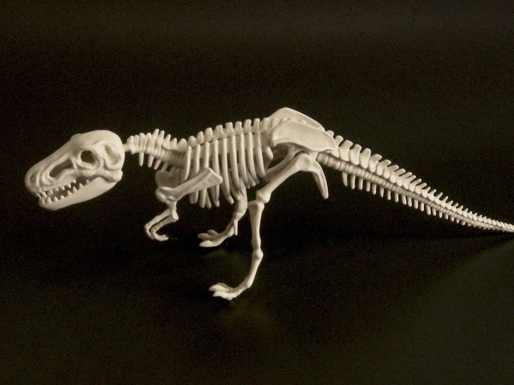
마스터즈
소년
little boy
김은희 독립 큐레이터와 함께 슬로우시네마의 거장 제임스 베닝의 [소년]을 이야기합니다. 신작을 출발점 삼아 베닝의 영화 세계와 시각 언어를 탐구하는 시간입니다.
5.3(토) 14:00 메가박스 전주객사 5관
code 334
모더레이터 : 김은희(독립 큐레이터)
-
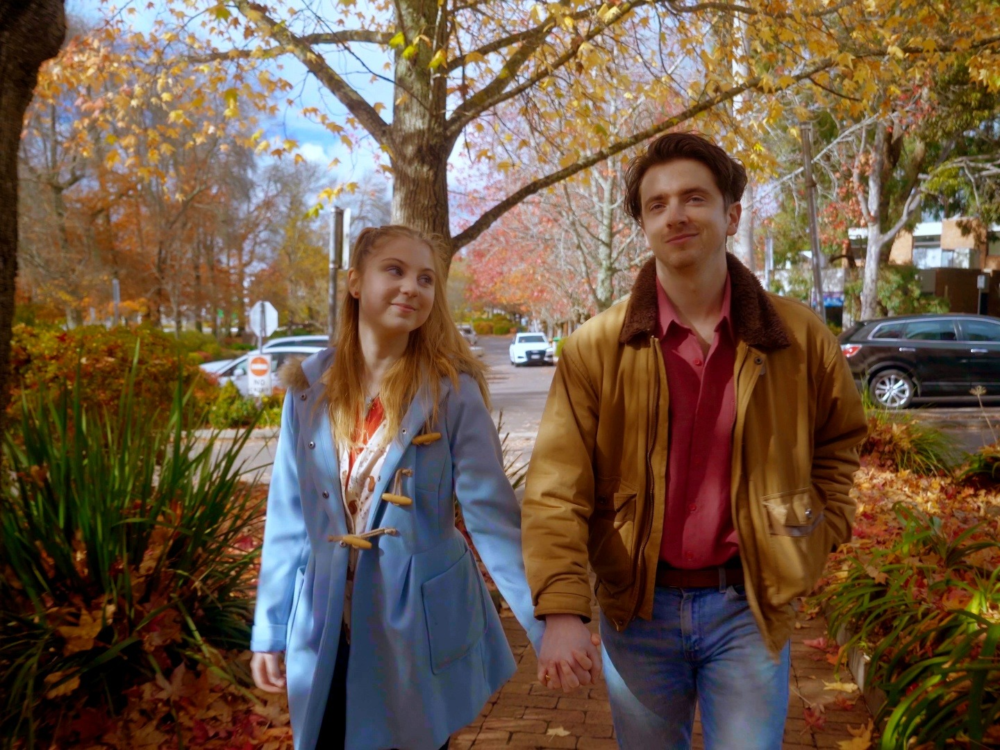
게스트 시네필: 에이드리언 마틴
빌 머술러스: 멈추지 않는 독립적인 시선
Bill Mousoulis: A Restless, Independent Vision
실험영화, 다큐멘터리, 뮤지컬 극영화 등 장르를 가리지 않고 영화를 만들며 일상적인 관계를 조망해온 빌 머술러스의 영화 세계를 돌이켜봅니다. 영화평론가 에이드리언 마틴과 함께 호주 영화사를 특별한 관점에서 바라보는 시간입니다.
5.4(일) 16:00 전주디지털독립영화관
code 437
모더레이터 : 에이드리언 마틴(영화평론가)
-
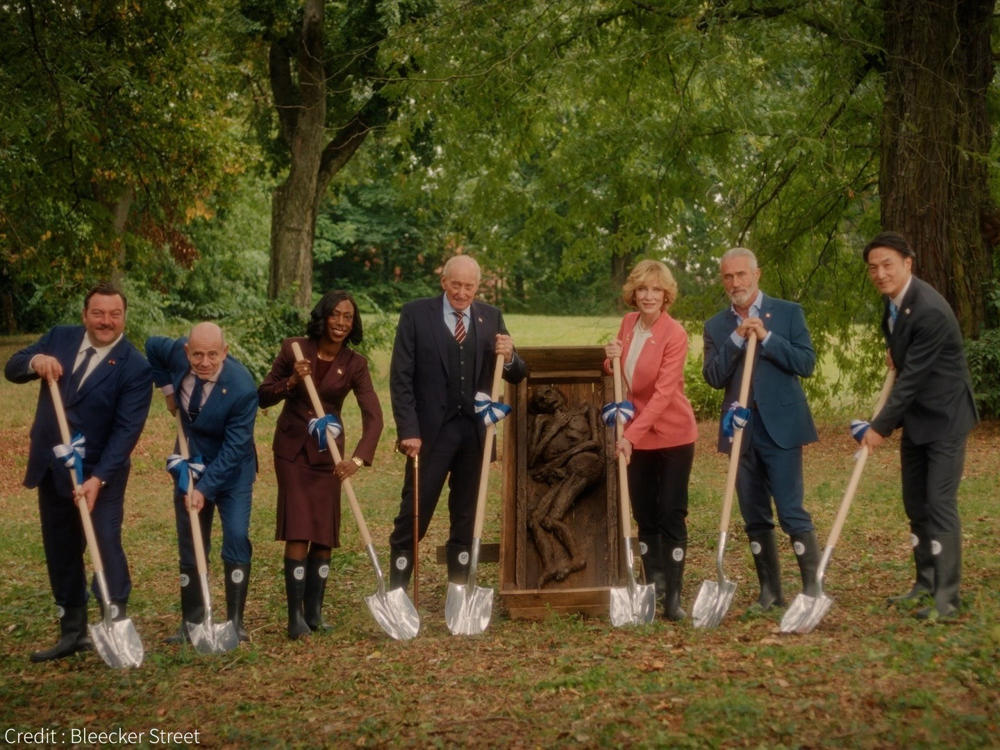
게스트 시네필: 에이드리언 마틴
뜬소문
Rumours
저예산으로 실험적인 방식의 필모그래피를 쌓아온 가이 매딘이 메이저 스튜디오와의 첫 작업인 [뜬소문]으로 돌아왔습니다. 아포칼립스적 호러 코미디라 할 수 있는 이 영화가 그의 작품 세계에서 어떤 위치에 놓이는지 함께 살펴보는 시간입니다.
5.4(일) 17:00 CGV전주고사 3관
code 440
모더레이터 : 김병규(영화평론가)
-
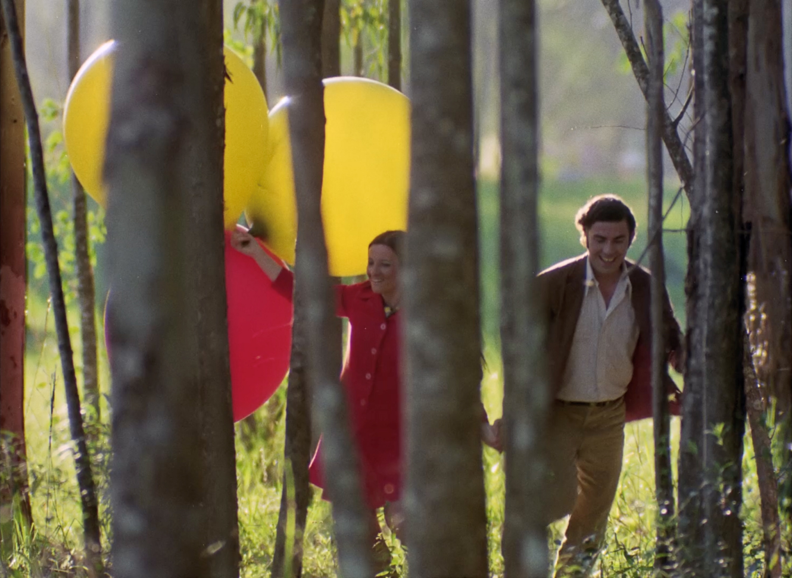
시네필전주
하나는 적고 둘은 좋아
One Is Few, Two Would Fill
[하나는 적고 둘은 좋아]는 브라질 영화사상 최초의 흑인 감독 오딜롱 로페스가 만든 작품입니다. 이 영화를 복원한 시네마테카 카피톨리우의 프로그래머 레오나르두 봄핑에게 영화가 브라질 영화사에서 가지는 의미를 들어봅니다.
5.4(일) 20:00 전주디지털독립영화관
code 455
모더레이터 : 레오나르두 봄핑(시네마테카 카피톨리우 프로그래머)
-
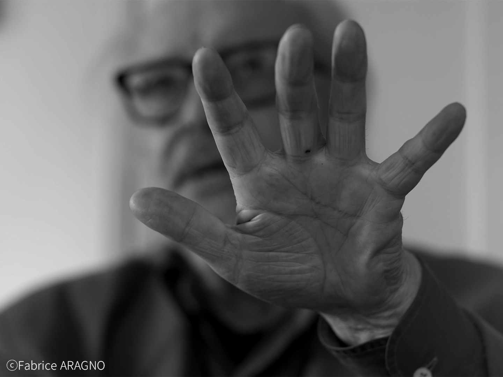
마스터즈
마스터즈 2: 장뤼크 고다르 단편
Masters 2: Jean-Luc Godard Shorts
장뤼크 고다르의 마지막 작품 [시나리오]와 [영화 [시나리오] 발표]를 매개로 정성일 영화평론가에게 고다르와 그의 영화에 관한 이야기를 들어봅니다.
5.4(일) 21:00 CGV전주고사 3관
code 457
모더레이터 : 정성일(영화평론가)
-
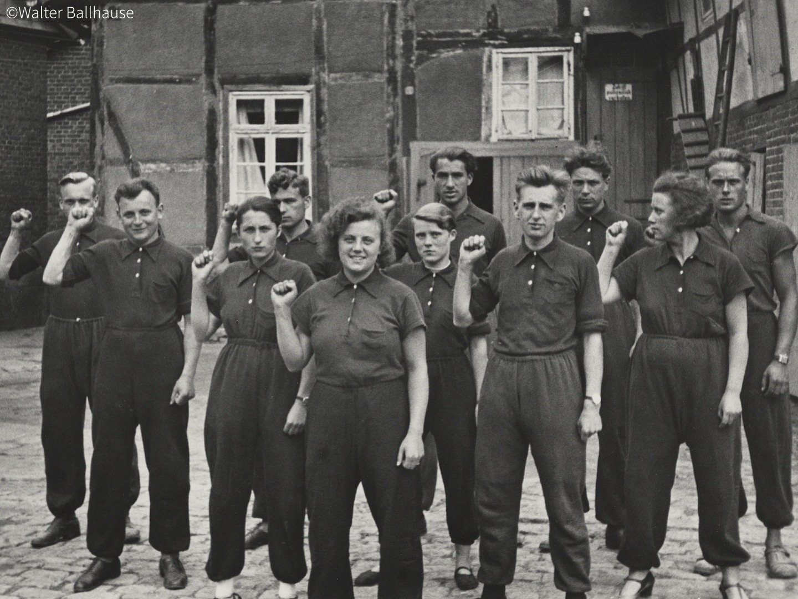
게스트 시네필: 에이드리언 마틴
마고 내시: 호주 사회의 도전적 이미지
Margot Nash: Challenging Images of Australian Life
배우로 활동을 시작해 독립영화 감독으로 실험적인 필모그래피를 이어나가고 있는 마고 내시 감독의 대표작 [무소유]와 단편 신작 [언더커런츠: 힘에 관한 명상]을 상영 후 호주의 영화 평론가 에이드리언 마틴과 함께 호주 영화사를 특별한 관점에서 바라보는 시간입니다.
5.5(월) 21:00 전주디지털독립영화관
code 555
모더레이터 : 에이드리언 마틴(영화평론가)
-
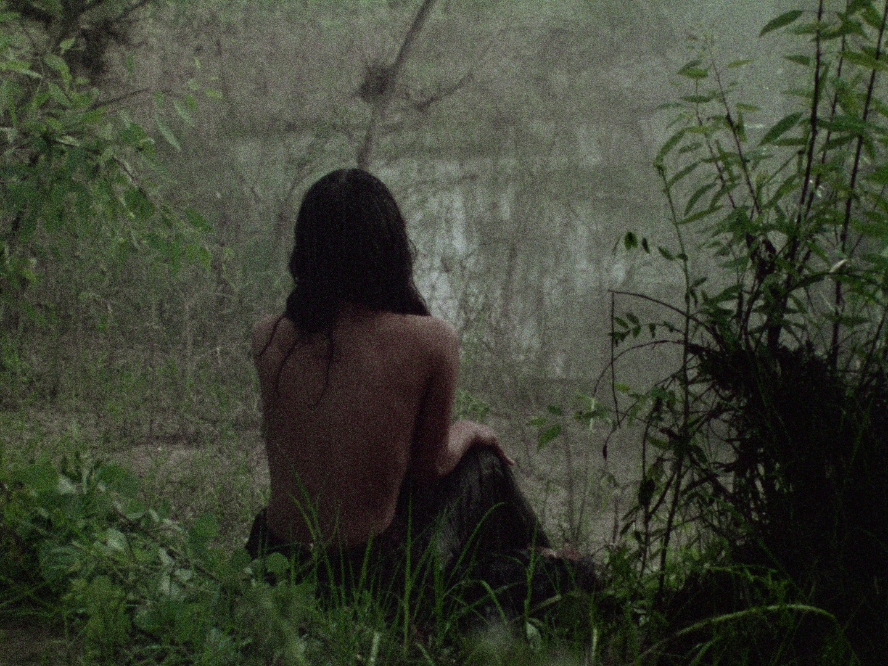
시네필전주
봉인된 땅
The Sealed Soil
이란 여성 감독의 힘을 보여주는 영화 [봉인된 땅] 상영 후 『뉴욕타임즈』, 『사이트&사운드』의 영화 저널리스트 비트리스 로아이사가 마르바 나빌리 감독의 영화 세계에 관해 설명합니다.
5.6(화) 10:30 전주디지털독립영화관
code 601
모더레이터 : 비트리스 로아이사(영화평론가·사학자)
-
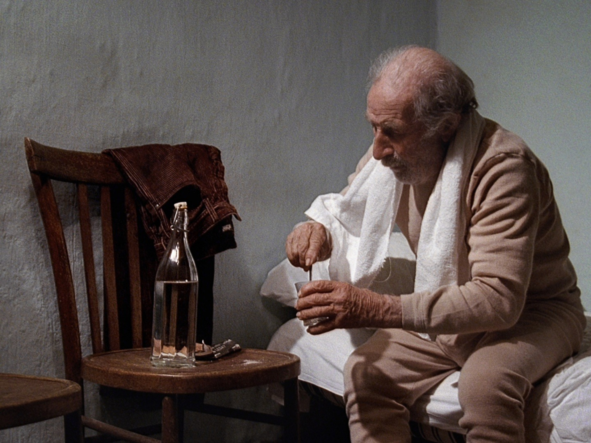
시네필전주
동물 촬영법의 세 가지 가르침: 디즈니, 숙스도르프, 프라마르티노
How to Film an Animal. Three Lessons: Disney, Sucksdorff, Frammartino
세 편의 35mm 필름으로 다시 전주를 방문한 전주국제영화제의 조력자, 하버드필름아카이브 헤이든 게스트 원장이 디즈니, 숙스도르프, 프라마르티노의 영화 상영 후 동물 영화 제작의 윤리에 대해 이야기합니다.
5.6(화) 17:00 전주디지털독립영화관
code 639
모더레이터 : 헤이든 게스트(하버드필름아카이브 원장)
‘영화와 함께 하는 특별한 대화’의 줄임말로, 영화를 둘러싼 다층적인 대화를 통해 영화 밖으로 확장된 이야기를 나누는 시간을 갖습니다.
- 영특한 대화는 영화 상영 후 60분 동안 진행됩니다.
- 참가 비용: 12,000원(영화 관람 포함)
- 별도 제공 여부가 표기된 행사에 한해서만 영어 통역이 제공됩니다.
- 영화제 사정에 따라 아래 내용은 변경될 수 있습니다.
-
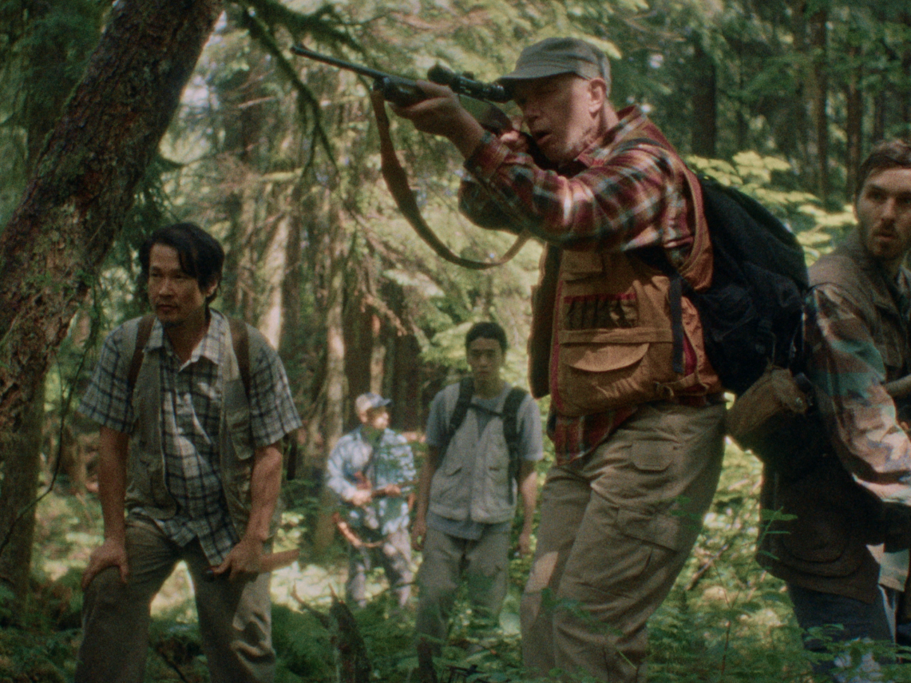
월드시네마
잡종
Mongrels
[기생충](2019)의 아카데미시상식 통역사로 잘 알려진 샤론 최와 [잡종]을 함께 보고 제롬 유 감독에게 한국계 캐나다인으로서의 디아스포라에 대한 이야기를 들어봅니다.
5.2(금) 17:30 CGV전주고사 1관
code 242
게스트 : 제롬 유(감독)
모더레이터 : 샤론 최(감독)
-
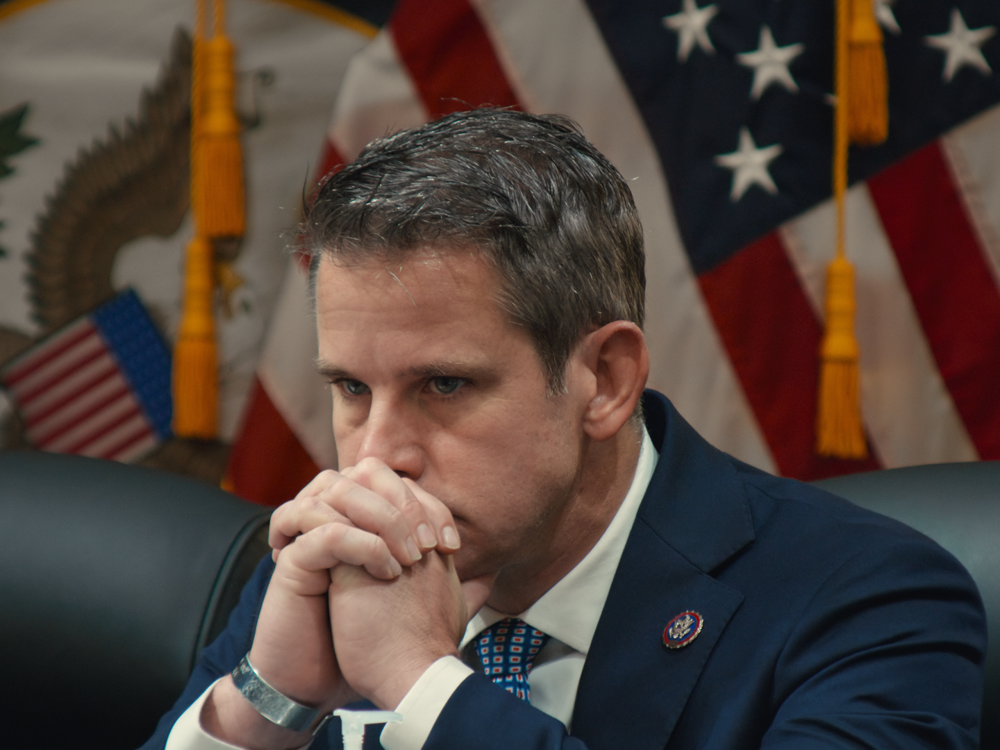
다시, 민주주의로
마지막 공화당원
The Last Republican
트럼프 대통령에 반기를 든 공화당원 애덤 킨징거에 대한 다큐멘터리 [마지막 공화당원]을 함께 보고 민주주의를 논하는 시간입니다.
5.3(토) 10:30 메가박스 전주객사 2관
code 312
게스트 : 김만권(학술연구교수, 경희대)
모더레이터 : 김은지(시사IN 정치이슈팀장)
-
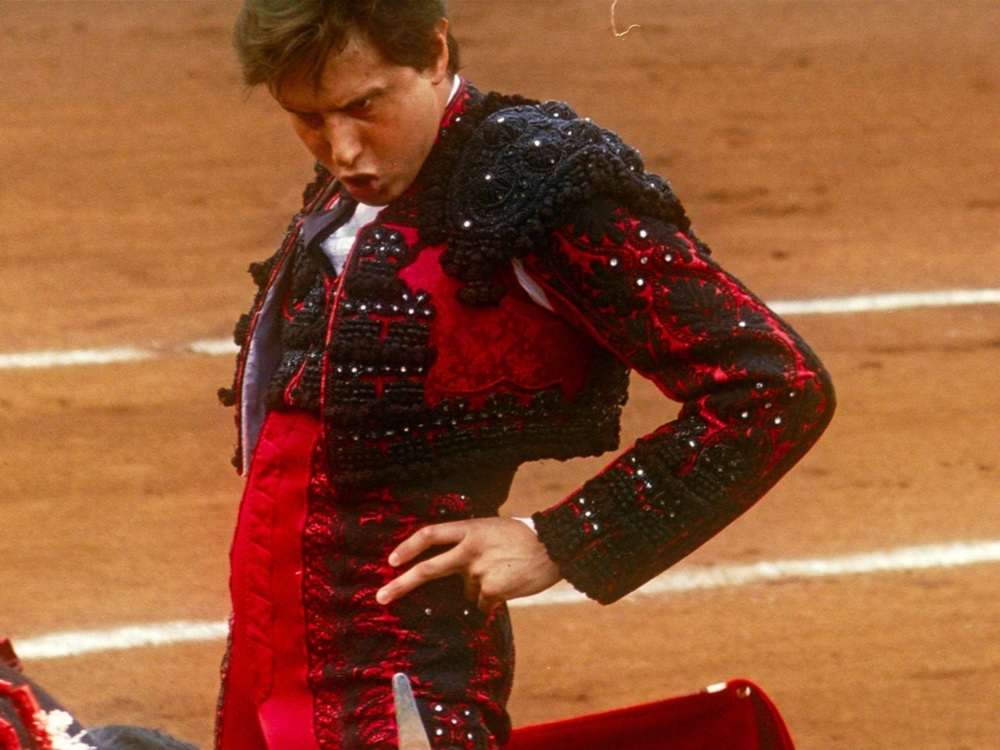
특별전 : 가능한 영화를 향하여
피치는 미쳐 가고 있어
Peaches Goes Bananas
음악계의 대표적 센언니, 퀴어 페미니스트 아이콘 '피치스'에 관한 다큐멘터리 [피치는 미쳐 가고 있어] 상영 후 오지은 음악인 겸 작가와 프로젝트 38의 조혜영 영화평론가가 함께 이야기하는 시간입니다.
5.4(일) 17:00 CGV전주고사 8관
code 445
게스트 : 조혜영(영화평론가)
모더레이터 : 오지은(음악인·작가)
-
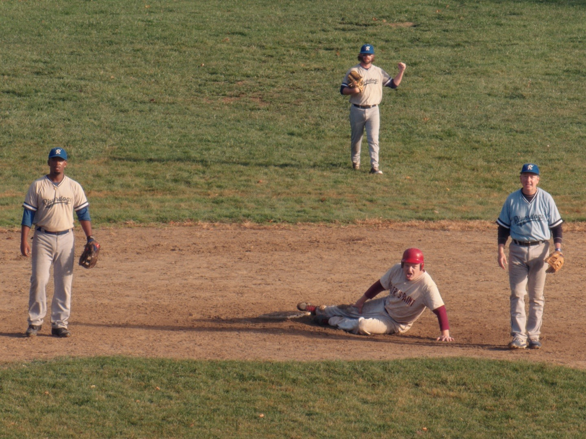
시네마천국
마지막 야구 경기
Eephus
[마지막 야구 경기]는 야구에 대한 영화이자 사라지는 공간에 대한 영화이기도 합니다. 김영글, 안유리 작가와 함께 좋아하는 것과 사라지는 것들에 대한 이야기를 공유하는 시간입니다.
5.4(일) 17:30 CGV전주고사 5관
code 442
게스트 : 안유리(작가)
모더레이터 : 김영글(작가)
-
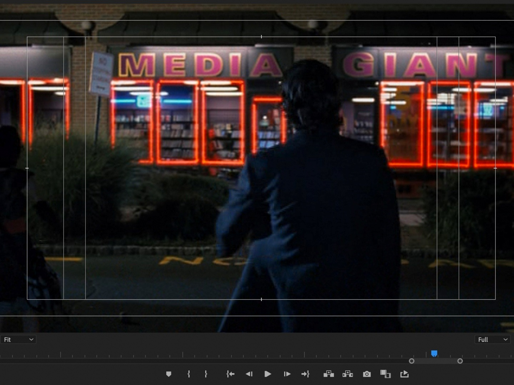
시네필전주
비디오헤븐
Videoheaven
지금은 사라진 비디오 가게를 아카이브 푸티지로 담아낸 [비디오헤븐]을 이진숙 영화제작자, 김형석 영화저널리스트와 함께 보고 시네필 문화와 그 영향을 돌아보는 시간을 가져봅니다.
5.5(월) 11:00 CGV전주고사 5관
code 546
게스트 : 이진숙(영화제작자)
모더레이터 : 김형석(영화저널리스트)
-
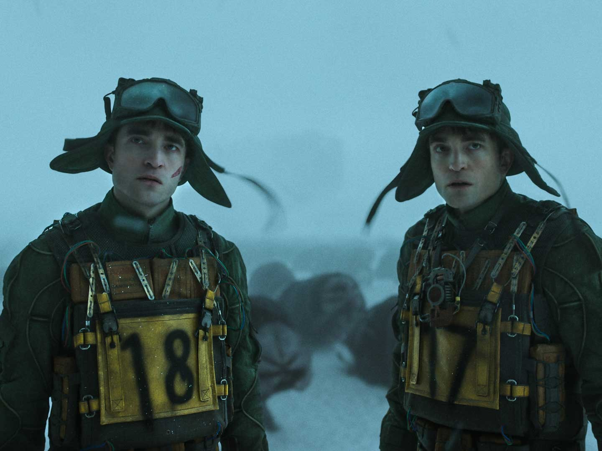
케이사운드라이브러리 + [미키 17]
한국영화 음향 전문 국내 대표기업인 ‘라이브톤’의 풍부한 경험과 노하우를 바탕으로 영화 음향의 효과적인 구현 방법과 사운드 기술의 최신 동향에 대해 알아봅니다. 최근 헐리우드 영화 [미키 17] 음향 제작 등 사운드에 얽힌 다양한 비하인드 스토리 방출과 참석자들의 질의로 해당 영화의 사운드 제작에 대한 궁금증도 해결하는 시간을 갖습니다.
5.5(월) 11:00 CGV전주고사 1관
code 503
게스트 : 최태영(음향감독 · 라이브톤 대표)
모더레이트 : 정지혜(영화평론가)
상영작 : [미키:17] 봉준호
-
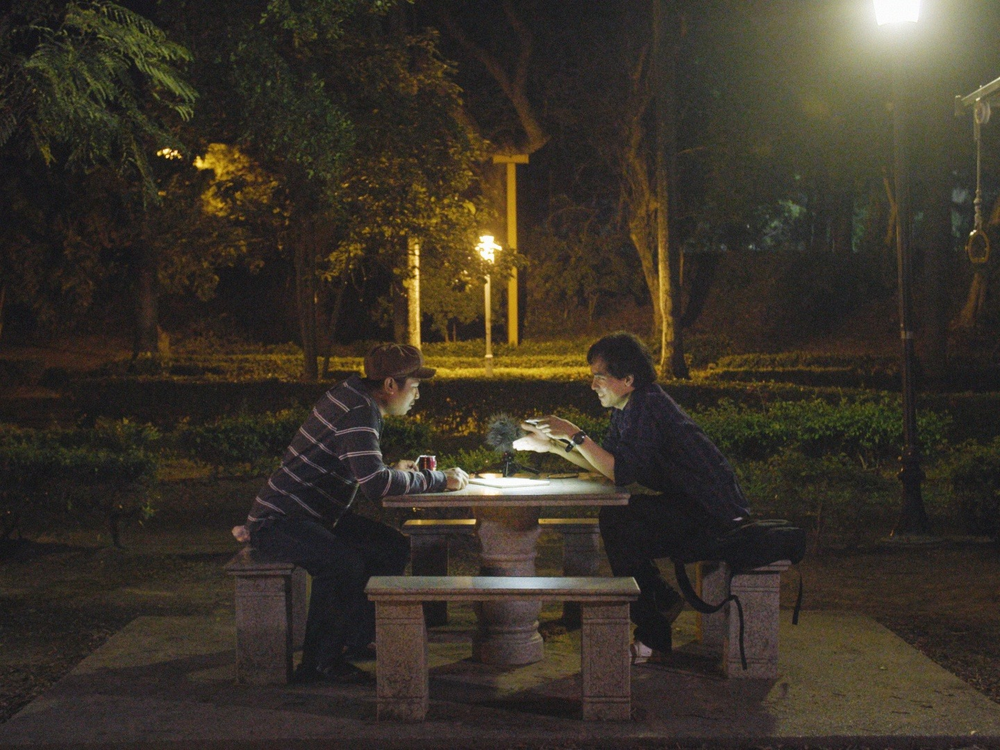
월드시네마
공원
Park
폐막작 [기계의 나라에서]의 김옥영 감독과 [밤산책](2023), [공원에서](2024) 등을 연출한 손구용 감독이 [공원] 상영 후 이주 노동과 노동자를 담아내는 카메라의 미학과 윤리, 그리고 다큐멘터리의 방법론에 대해 대화를 나누는 시간입니다.
5.5(월) 14:00 CGV전주고사 3관
code 524
게스트 : 손구용(감독)
모더레이터 : 김옥영(감독)
-
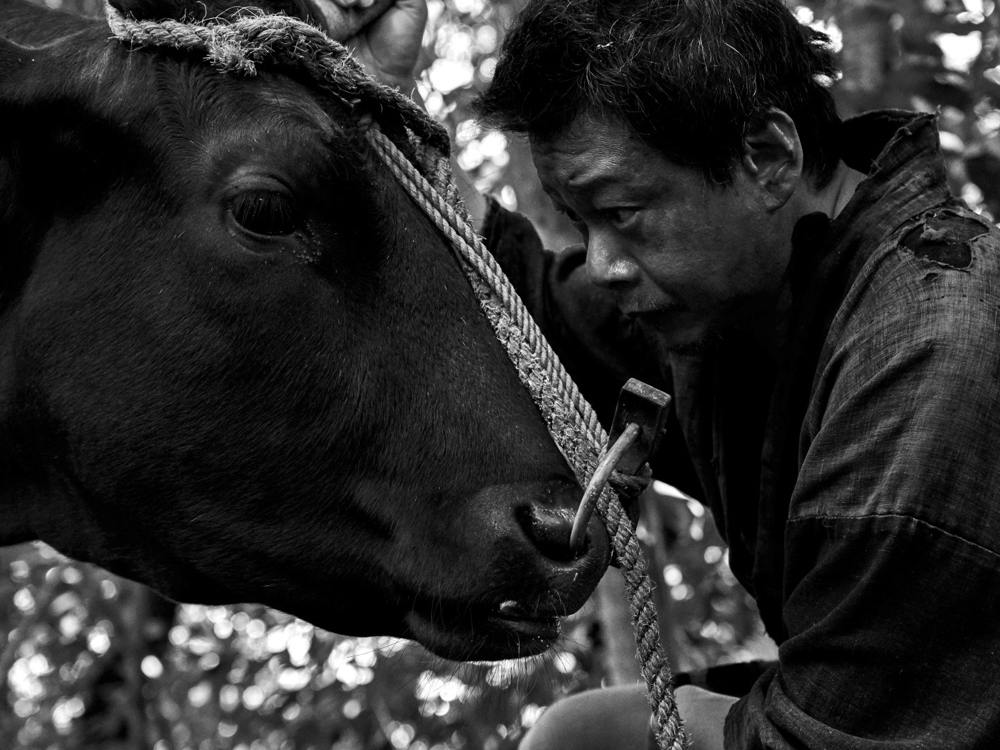
월드시네마
검은 소
Black Ox
서구화가 진행 중이던 메이지 시대를 배경으로 수렵과 채집을 하던 한 남자가 농부로, '일본인'으로 변모해가는 과정을 그린 <검은 소>의 감독, 각본가와 영화와 제작과정에 대해 이야기 나누는 시간입니다.
5.5(월) 17:00 CGV전주고사 1관
code 522
게스트 : 쓰타 데쓰이치로(감독), 구보데라 고이치(각본가)
모더레이터 : 정성일(영화평론가)
J 스페셜: 올해의 프로그래머’ 섹션 행사로, 올해의 프로그래머로부터 선정작에 관한 설명을 듣고, 경우에 따라 감독, 배우 등 관계자들을 초청하여 영화에 대한 이야기를 공유합니다.
- j스페셜클래스는 영화 상영 후 60분 동안 진행됩니다.
- 참가 비용: 12,000원(영화 관람 포함)
- 별도 제공 여부가 표기된 행사에 한해서만 영어 통역이 제공됩니다.
- 영화제 사정에 따라 아래 내용은 변경될 수 있습니다.
-
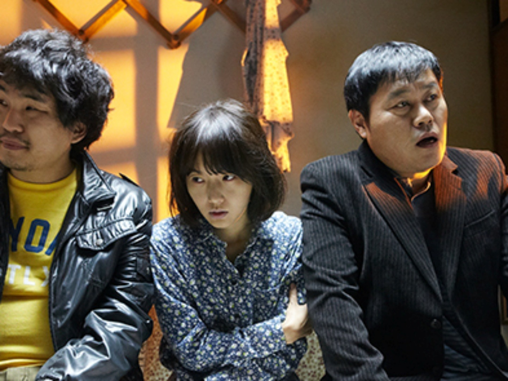
J 스페셜: 올해의 프로그래머
성실한 나라의 앨리스 + 꽃놀이 간다
Alice In Earnestland + Toe-Tapping Tunes
5.1(목) 13:00 메가박스 전주객사 1관
code 131
게스트 : 이정현(올해의 프로그래머), 안국진(감독)
모더레이터 : 문석(전주국제영화제 프로그래머)
-
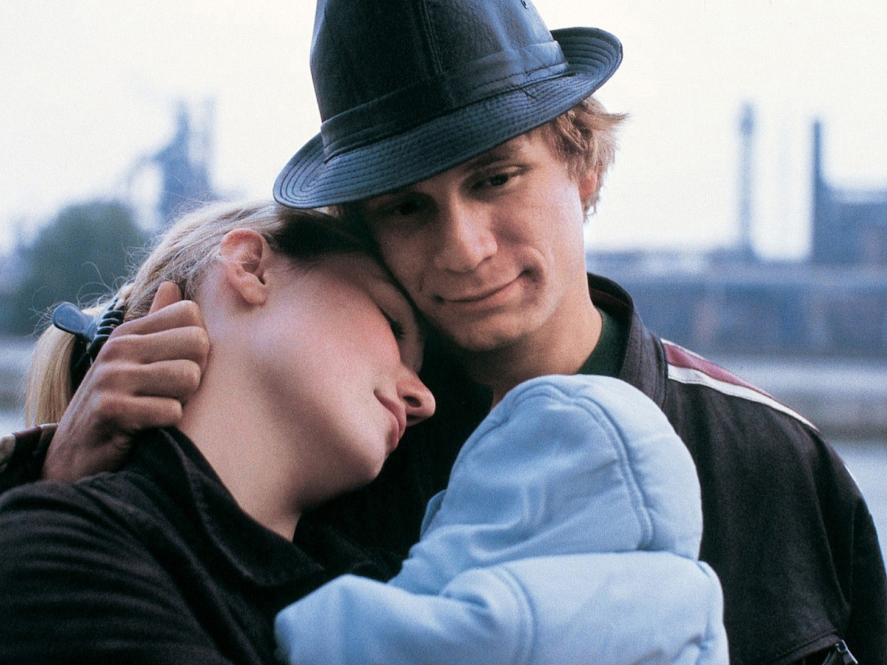
J 스페셜: 올해의 프로그래머
더 차일드
The Child
5.1(목) 17:00 메가박스 전주객사 1관
code 151
게스트 : 이정현(올해의 프로그래머)
모더레이터 : 정지혜(영화평론가)
-
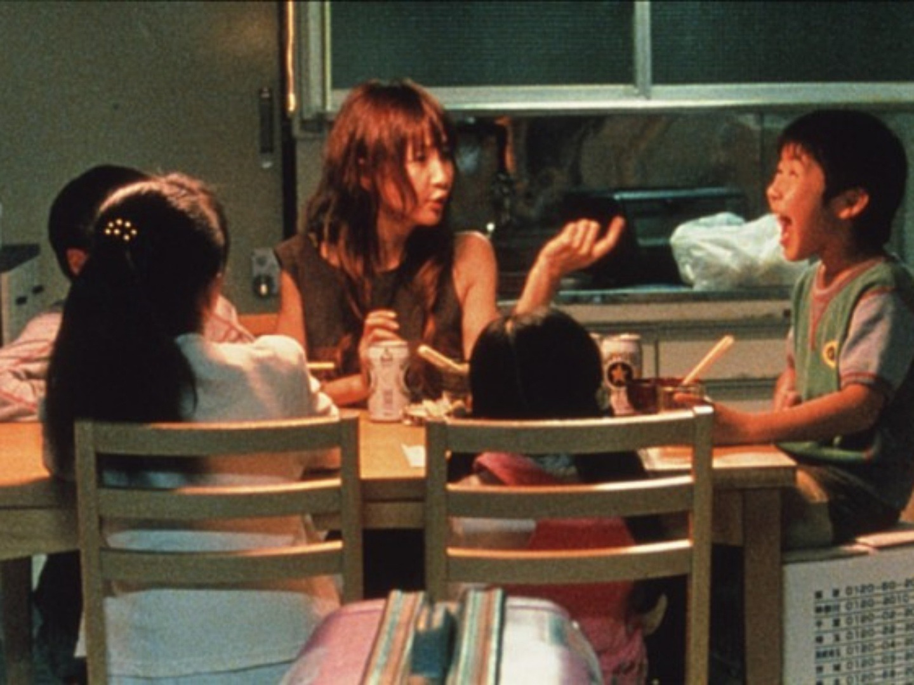
J 스페셜: 올해의 프로그래머
아무도 모른다
Nobody Knows
5.2(금) 10:00 메가박스 전주객사 1관
code 211
게스트 : 이정현(올해의 프로그래머)
모더레이터 : 이다혜(기자)
-
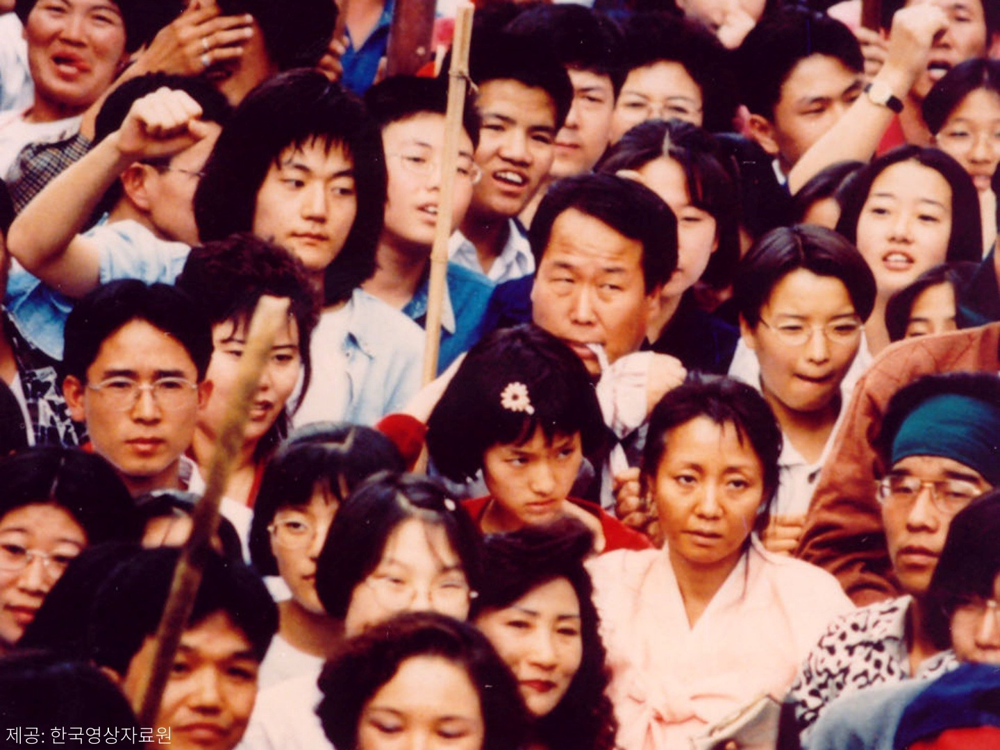
J 스페셜: 올해의 프로그래머
꽃잎
A Petal
5.2(금) 18:30 메가박스 전주객사 1관
code 250
게스트 : 이정현(올해의 프로그래머), 장선우(감독)
모더레이터 : 정지혜(영화평론가)
-
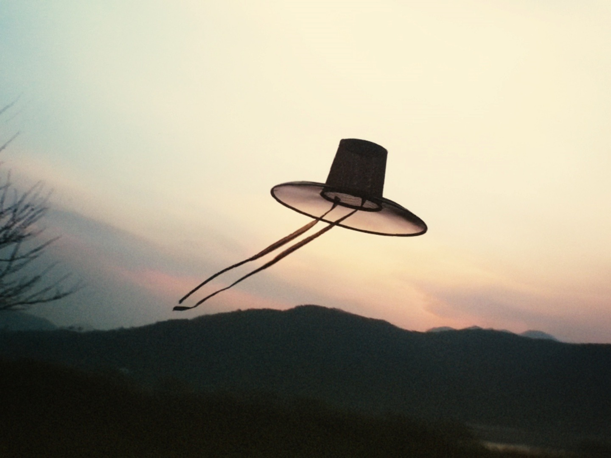
J 스페셜: 올해의 프로그래머
파란만장 + 복수는 나의 것
NIGHT FISHING + Sympathy for Mr. Vengeance
5.3(토) 18:00 메가박스 전주객사 1관
code 350
게스트 : 이정현(올해의 프로그래머), 박찬욱(감독), 박찬경(감독)
모더레이터 : 문석(전주국제영화제 프로그래머)
16mm 필름 상영 행사로, 올해는 한국에서 필름작업을 지속해온 스페이스셀의 이장욱 감독을 초청해 그의 대표작과 신작을 상영합니다.
삶의 반 이상이 온라인에 존재하는 시대에 영사기가 돌아가는 소리를 들으며 필름 상영을 보는 것만으로도 새로움을 느낄 수 있을 것입니다.
거기에
더해
16mm 영사기 2대를 이용해 펼치는 광합 퍼포먼스는 영화의 다양한 존재방식을 보여주는 특별한 경험을 선사할 것입니다.
- 퍼포먼스는 묶음 상영 중 5번째 작품에 해당됩니다.
- 참가 비용: 12,000원(영화 관람 포함)
-
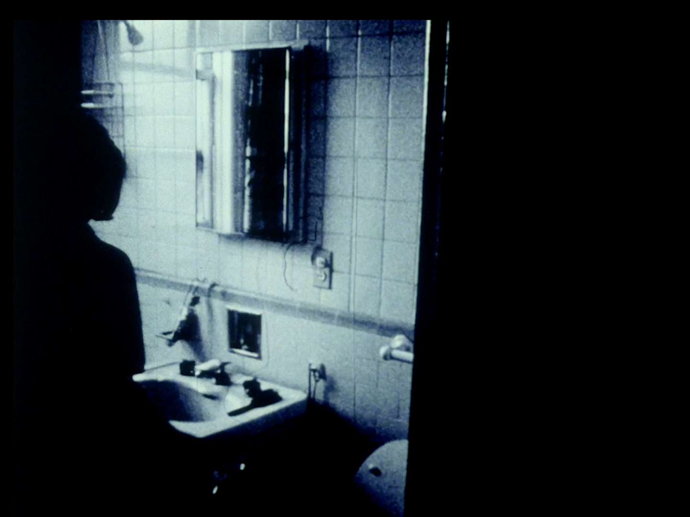
이장욱 감독전 + 라이브 필름 퍼포먼스
Alice In Earnestland + Toe-Tapping Tunes
5.3(토) 10:30 전주디지털독립영화관
code 302
이장욱(감독, 스페이스셀)
영화제, 영화인들의 현장 경험, 흥미로운 막후 이야기를 하는 가벼운 영화 수다로 전주국제영화제를 대표하는 토크 프로그램입니다.
- 전주톡톡은 40분 동안 진행됩니다..
- 참가 비용: 12,000원(영화 관람 포함)
- 별도 제공 여부가 표기된 행사에 한해서만 영어 통역이 제공됩니다.
- 영화제 사정에 따라 아래 내용은 변경될 수 있습니다.
-
배창호 특별전 : 대중성과 실험성 사이에서
배창호 특별전
The Close Up of Bae Chang-ho

-
배창호 특별전 : 대중성과 실험성 사이에서
배창호 특별전
The Close Up of Bae Chang-ho
-
배창호 특별전 : 대중성과 실험성 사이에서
배창호 특별전
The Close Up of Bae Chang-ho
-
배창호 특별전 : 대중성과 실험성 사이에서
배창호 특별전
The Close Up of Bae Chang-ho
-
배창호 특별전 : 대중성과 실험성 사이에서
배창호 특별전
The Close Up of Bae Chang-ho
-
배창호 특별전 : 대중성과 실험성 사이에서
배창호 특별전
The Close Up of Bae Chang-ho
-
배창호 특별전 : 대중성과 실험성 사이에서
배창호 특별전
The Close Up of Bae Chang-ho
영상이 초단위로 생겨나는 사회에서 전주국제영화제는 제대로 된 영화 보기를 시도합니다.
영화를 ‘보기'에 그치지 않고 영화를 ‘알기’
위해
혹은
영화의
역사에 대한 이해를 돕고자 영화학자, 비평가 등이 영화를 통해 다양한 해석을 제시하는 강연 프로그램입니다.
- 영화로의 여행은 영화 상영 후 60분 동안 진행됩니다.
- 참가 비용: 12,000원(영화 관람 포함)
- 별도 제공 여부가 표기된 행사에 한해서만 영어 통역이 제공됩니다.
- 영화제 사정에 따라 아래 내용은 변경될 수 있습니다.
-
J 스페셜: 올해의 프로그래머
꽃잎
A Petal
5.2(금) 18:30 메가박스 전주객사 1관
code 250
게스트 : 이정현(올해의 프로그래머), 장선우(감독)
모더레이터 : 정지혜(영화평론가)
-
배창호 특별전 : 대중성과 실험성 사이에서
배창호 특별전
The Close Up of Bae Chang-ho
-
배창호 특별전 : 대중성과 실험성 사이에서
배창호 특별전
The Close Up of Bae Chang-ho
-
배창호 특별전 : 대중성과 실험성 사이에서
배창호 특별전
The Close Up of Bae Chang-ho
-
배창호 특별전 : 대중성과 실험성 사이에서
배창호 특별전
The Close Up of Bae Chang-ho
-
배창호 특별전 : 대중성과 실험성 사이에서
배창호 특별전
The Close Up of Bae Chang-ho
-
배창호 특별전 : 대중성과 실험성 사이에서
배창호 특별전
The Close Up of Bae Chang-ho
영화로의 여행
영상이 초단위로 생겨나는 사회에서 전주국제영화제는 제대로 된 영화 보기를 시도합니다. 영화를 ‘보기'에 그치지 않고 영화를 ‘알기’ 위해 혹은 영화의 역사에 대한 이해를 돕고자 영화학자, 비평가 등이 영화를 통해 다양한 해석을 제시하는 강연 프로그램입니다.
- 영화로의 여행은 영화 상영 후 60분 동안 진행됩니다.
- 참가 비용: 12,000원(영화 관람 포함)
- 별도 제공 여부가 표기된 행사에 한해서만 영어 통역이 제공됩니다.
- 영화제 사정에 따라 아래 내용은 변경될 수 있습니다.
-
배창호 특별전 : 대중성과 실험성 사이에서
배창호 특별전
The Close Up of Bae Chang-ho
-
배창호 특별전 : 대중성과 실험성 사이에서
배창호 특별전
The Close Up of Bae Chang-ho
-
배창호 특별전 : 대중성과 실험성 사이에서
배창호 특별전
The Close Up of Bae Chang-ho
-
배창호 특별전 : 대중성과 실험성 사이에서
배창호 특별전
The Close Up of Bae Chang-ho
-
배창호 특별전 : 대중성과 실험성 사이에서
배창호 특별전
The Close Up of Bae Chang-ho
-
배창호 특별전 : 대중성과 실험성 사이에서
배창호 특별전
The Close Up of Bae Chang-ho
-
배창호 특별전 : 대중성과 실험성 사이에서
배창호 특별전
The Close Up of Bae Chang-ho